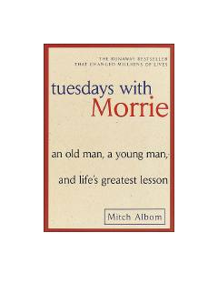

TWOg'ir xastalikka uchragan ustoz va uning shogirdi o'rtasidagi hayotiy saboqlarga boy uchrashuvlar.
Muallif o'zining og'ir kasallikka chalingan sobiq professori Morri Shvars bilan har seshanba kuni uchrashib, hayotning eng muhim saboqlari, insoniylik, muhabbat va o'lim haqida suhbatlashgani haqidagi ta'sirli asar. Ushbu kitob hayot mazmuni va vaqtning qadri haqida chuqur o'ylashga undaydi.